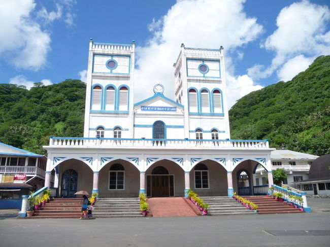

アメリカ領サモアは、南太平洋の西に位置するサモア諸島の東端にあります。地理的には、南緯14度20分、西経170度の位置にあります。
アメリカ領サモアは、アメリカ合衆国の海外領土であり、自治領としての地位を持っています。
アメリカ領サモアの人々は、豊かな自然環境に囲まれて生活しています。漁業や観光業が主な産業であり、これらは地元経済において重要な役割を果たしています。
アメリカ領サモアでは、地域内の社会的・経済的な相互作用が重要です。観光業や漁業によって生じる収入が、地域全体の経済に影響を与えるだけでなく、地域社会のつながりを強化します。
アメリカ領サモアは、地理的に小さな地域ですが、独自の文化や社会が形成されています。
持続可能な開発目標（SDGs）は、アメリカ領サモアにおいても重要な枠組みです。具体的には、教育と健康、経済成長、環境保護などの分野での取り組みが進められています。写真は海の豊かさを守る講演。